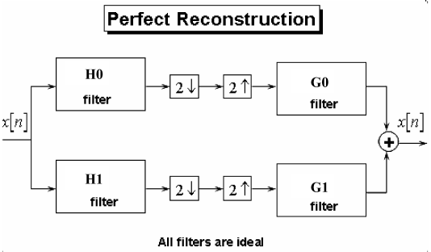
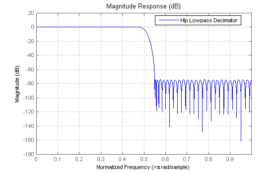
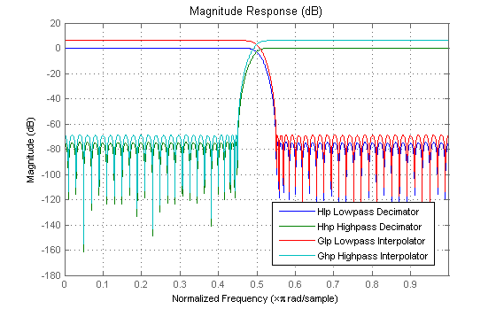
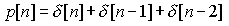
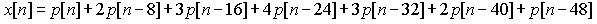
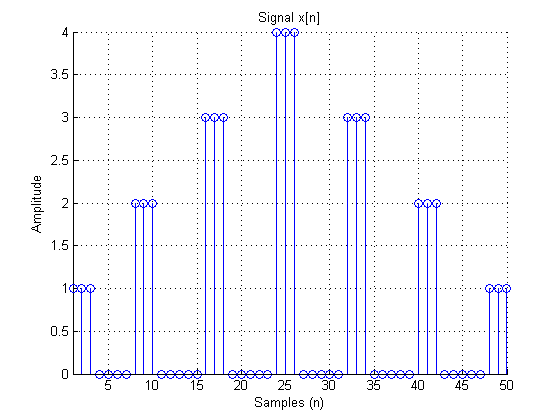
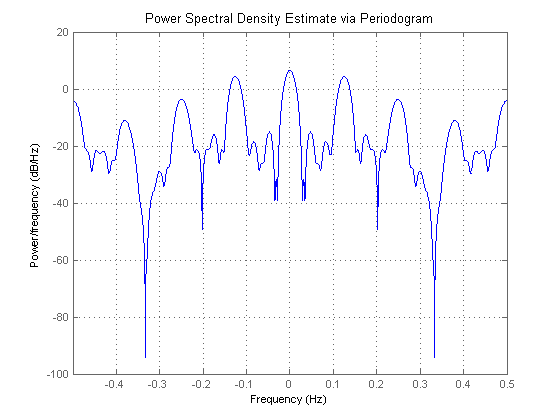
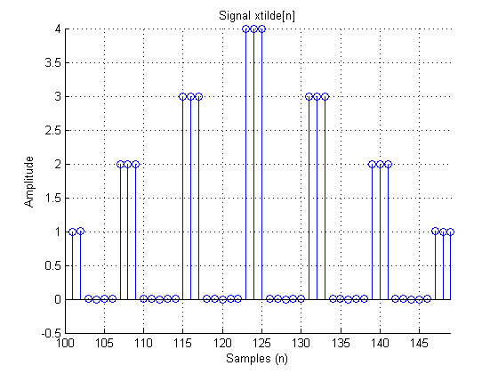
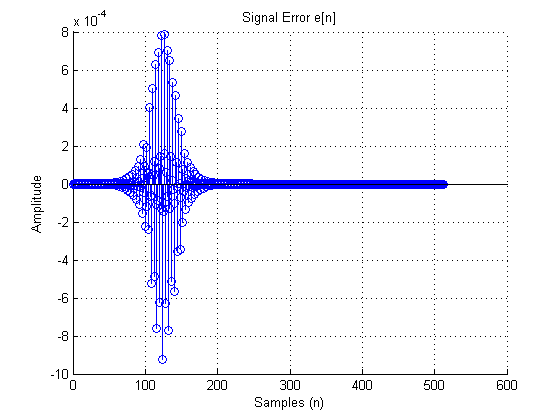
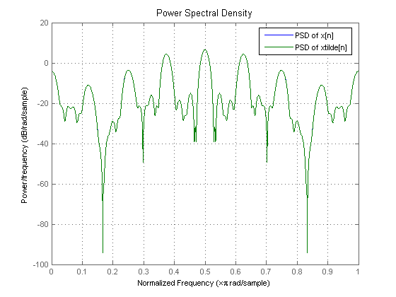

Often in digital signal processing the need arises to decompose signals into low and high frequency bands, after which need to be combined to reconstruct the original signal. Such an example is found in subband coding (SBC). This demo shows an example of perfect reconstruction of a two-channel filter bank, also known as the Quadrature Mirror Filter (QMF) Bank since it uses power complementary filters. We will simulate our perfect reconstruction process by filtering a signal made up of Kronecker deltas. Plots of the input, output, and error signal will be provided, as well as the magnitude spectra of the signals. The mean-square error will also be computed to measure the effectiveness of the perfect reconstruction filter bank.
Perfect reconstruction is a process by which a signal is completely recovered after being separated into its low frequencies and high frequencies. Below is a block diagram of a perfect reconstruction process which uses ideal filters. The perfect reconstruction process requires four filters, two lowpass filters (H0 and G0) and two highpass filters (H1 and G1). In addition, it requires a downsampler and upsampler between the two lowpass and between the two highpass filters. Note that we have to account for the fact that our output filters need to have a gain of two to compensate for the preceding upsampler.

The Filter Design Toolbox provides a specialized function, called FIRPR2CHFB, to design the four filters required to implement an FIR perfect reconstruction two-channel filter bank as described above. FIRPR2CHFB designs the four FIR filters for the analysis (H0 and H1) and synthesis (G0 and G1) sections of a two-channel perfect reconstruction filter bank. The design corresponds to so-called orthogonal filter banks also known as power-symmetric filter banks, which are required in order to achieve the perfect reconstruction.
Let's design a filter bank with filters of order 99 and passband edges of the lowpass and highpass filters of 0.45 and 0.55, respectively:
N = 99; [H0,H1,G0,G1] = firpr2chfb(N,.45);
Note that the analysis path consists of a filter followed by a downsampler, which is a decimator, and the synthesis path consists of an upsampler followed by a filter, which is an interpolator. So, we can use the multirate filter objects available in the Filter Design Toolbox to implement our analysis and synthesis filter bank by using a decimator followed by an interpolator, respectively.
% Analysis filters (decimators). Hlp = mfilt.firdecim(2,H0); Hhp = mfilt.firdecim(2,H1); % Synthesis filters (interpolators). Glp = mfilt.firinterp(2,G0); Ghp = mfilt.firinterp(2,G1);
Looking at the first lowpass filter we can see that it meets our 0.45 cutoff specification.
hfv = fvtool(Hlp); legend(hfv,'Hlp Lowpass Decimator'); set(hfv, 'Color', [1 1 1])
Let's look at all four filters.
set(hfv, 'Filters', [Hlp,Hhp,Glp,Ghp]); legend(hfv,'Hlp Lowpass Decimator','Hhp Highpass Decimator',... 'Glp Lowpass Interpolator','Ghp Highpass Interpolator');
For the sake of the demo let p[n] denote the signal

and let the signal x[n] be defined by

NOTE: Since MATLAB uses one-based indexing, delta[n]=1 when n=1.
x = zeros(512,1); x(1:3) = 1; x(8:10) = 2; x(16:18) = 3; x(24:26) = 4; x(32:34) = 3; x(40:42) = 2; x(48:50) = 1; stemplot(x,'x[n]'); set(gcf, 'Color', [1 1 1])
Now let's compute the signal's magnitude spectra using a periodogram spectrum object and plot it.
h = spectrum.periodogram;
hopts = psdopts(h); hopts.CenterDc=true; hopts.NormalizedFrequency=false;
hpsdx = psd(h,x,hopts);
plot(hpsdx);
set(gcf, 'Color', [1 1 1])
 Using MATLAB's FILTER command with the multirate filters designed above we will implement the perfect reconstruction two-channel filter bank and filter the signal x[n] defined above.
% Lowpass frequency band. x0 = filter(Hlp,x); % Analysis filter bank output x0 = filter(Glp,x0); % Synthesis filter bank output % High frequency band. x1 = filter(Hhp,x); % Analysis filter bank output x1 = filter(Ghp,x1); % Synthesis filter bank output xtilde = x0+x1;
We can see from the plot of xtilde[n] below that our perfect reconstruction two-channel filter bank completely reconstructed our original signal x[n].
stemplot(xtilde,'xtilde[n]'); set(gcf, 'Color', [1 1 1])
Another way to verify that we achieved perfect reconstruction is by plotting the error defined by the difference between the original signal x[n] and the output of the two-channel filter bank xtilde[n], i.e., e[n] = xtilde[n]-x[n]. We see that the error is very small.
% Delay x[n] so that it aligns with the filtered output, xtilde[n] which % was delayed due to the filtering. xshifted=[zeros(N,1);x(1:end-N)]; e = xtilde-xshifted; stemplot(e,'Error e[n]') set(gcf, 'Color', [1 1 1])
We can also verify that we achieved perfect reconstruction by comparing the magnitude spectra of x[n] with that of xtilde[n] by overlaying both spectras. We will do this by creating a DSP data object (dspdata) with the spectra from both PSD objects created above, and then plot it.
hpsdxtilde = psd(h,xtilde,hopts); hpsd = dspdata.psd([hpsdx.Data,hpsdxtilde.Data]); plot(hpsd); legend('PSD of x[n]','PSD of xtilde[n]') set(gcf, 'Color', [1 1 1])
As we can see from time plot of our output signal as well as its spectral content, our perfect reconstruction two-channel filter bank did an excellent job. Moreover, the mean-square error (MSE) is only:
mse = sum(abs(e).^2)/length(e)
mse = 1.7483e-008
See also FIR Halfband Filter Design.
Listing of helper M-file functions used above.
% STEMPLOT type stemplot.m
function stemplot(x,varname)
%STEMPLOT Plots the signal specified using the STEM function.
% Copyright 1999-2004 The MathWorks, Inc.
figure;
stem(x);
grid;
title(['Signal ',varname]);
ylabel('Amplitude');
xlabel('Samples (n)');
% Zoom-in to samples of interest.
ylim = get(gca,'ylim');
idx = find(abs(x)>=0.001);
if ~isempty(idx),
axis([idx(1) idx(end) ylim]);
end
% [EOF]